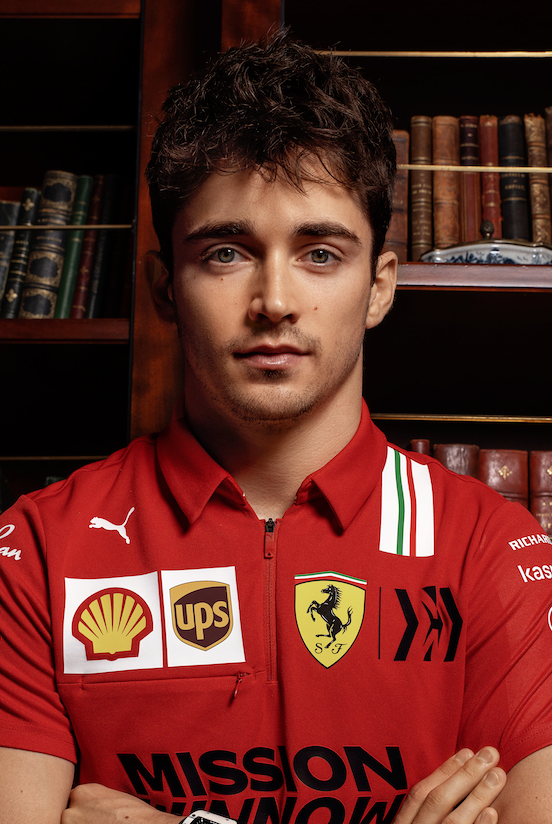
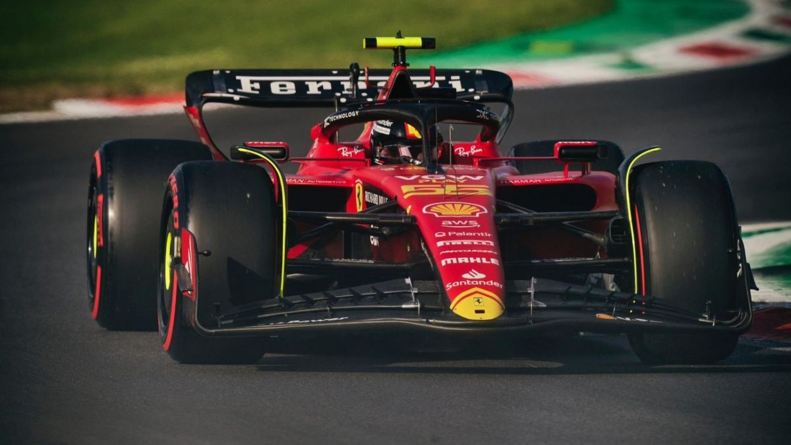

Про Шарля
Шарль Леклер народився 16 жовтня 1997 року в Монако. Він є пілотом Формули 1, який виступає за команду Ferrari. Його любов до гонок почалася ще в дитинстві, коли він почав брати участь у картингових змаганнях. Його стиль водіння та амбіції зробили його одним із найбільш перспективних гонщиків сучасної Формули 1.
Кар'єра
Шарль почав свою кар'єру в картингу, здобуваючи перемоги на місцевих та міжнародних турнірах. У 2016 році він приєднався до молодіжної програми Ferrari. Його талант швидко привернув увагу топових команд, і в 2018 році він дебютував у Формулі 1 у складі Sauber, а вже в 2019 році став пілотом Ferrari.
Шлях до Формули 1
Шарль здобув важливий досвід у молодіжних серіях, таких як Формула 2, де він став чемпіоном у 2017 році. Його швидкість і стійкість на трасі допомогли йому швидко адаптуватися до Формули 1 і показати вражаючі результати у свої перші роки.
Досягнення
За свою коротку, але яскраву кар'єру, Леклер вже встиг здобути кілька перемог і фінішів на подіумі. Він вважається одним з найшвидших пілотів свого покоління. Його основні досягнення:
- Дебют у Формулі 1 в 2018 році
- Перемога у двох гран-прі у сезоні 2019 року
- Наймолодший пілот, який здобув поул для Ferrari
Навички та технології
Шарль володіє видатними навичками управління болідом на найвищому рівні. Його основні навички включають:
- Швидкість і реакція на високих швидкостях
- Управління стратегією гонки
- Командна робота з інженерами